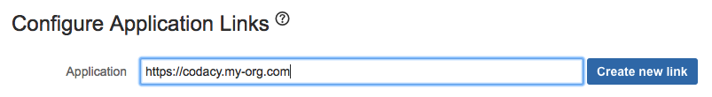

Bitbucket Server¶
Set your configuration values for your Bitbucket instance on the values.yaml file.
NOTE: Since Bitbucket Server uses OAuth1, you'll need to create a key pair to sign and validate the requests between Codacy and the Bitbucket Server instance:
-
Create a key pair using the RSA algorithm in the PKCS#8 format by running the following commands below, making sure that you don't define a passphrase:
-
openssl genrsa -out mykey openssl pkcs8 -nocrypt -in mykey -out mykeypkcs8 -topk8-
openssl rsa -in mykey -pubout -out mykey.pub -
Copy the private key from the
mykeypkcs8file and set it in theconsumerPrivateKey, ignoring the first and last lines. - Copy the public key from the
mykey.pubfile and set it in theconsumerPublicKey, ignoring the first and last lines.
Please note that you must go to http://codacy.example.com/admin/integrations, select the desired provider and Test & Save your configuration for it to be applied.
Go to admin/integration on Codacy and set the Project Keys on the Bitbucket Server integration, these should be the keys of the projects you would like to retrieve repositories of.

Bitbucket Server Application Link¶
To set up Bitbucket Server you need to create an application link on your Bitbucket Server installation. You can click on here and go to the application links list.
Application Link Creation¶
Create the link, use your Codacy installation URL for this
Name the link¶
Application Name: You can name the application (ex: Codacy)
Application Type: The application type is Generic Application
The rest of the configuration should be left blank.

After the link is created, click edit to add an incoming connection.
Add incoming connection¶
Consumer Key: This value should be copied from the "Client ID" field in the Codacy setup page.
Consumer Name: You can choose any name (ex: Codacy).
Public Key: This value should be copied from the "Client Secret" field on the Codacy setup page.
The rest of the fields can be left blank.

After the application link is created, you will be able to add Bitbucket Server as an integration in the repository settings.